/* harley-weir - proofs */
12 plates. Deterministic overlays rendered by the composition-analysis skill.
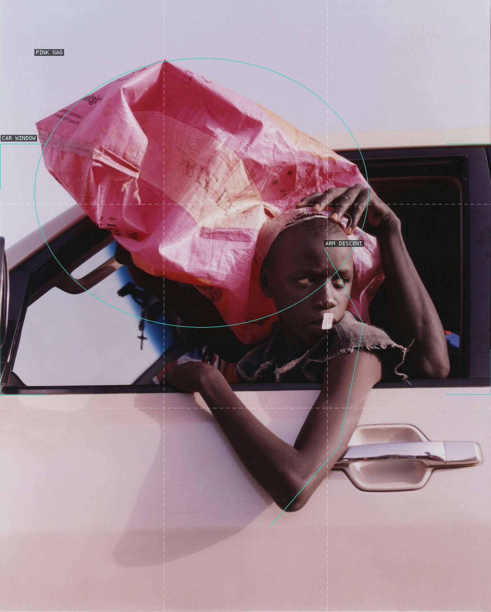
01-boys-dont-cry-2016
A window and bag fold a departing body into a shallow, color-saturated compartment.
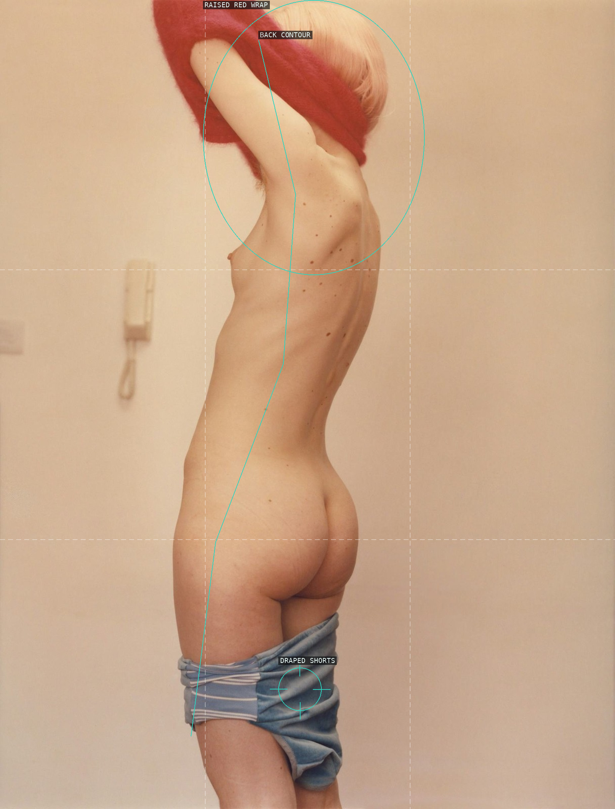
02-baron-magazine-2013
The vertical crop makes one unbroken body contour negotiate a small field of cloth and wall.
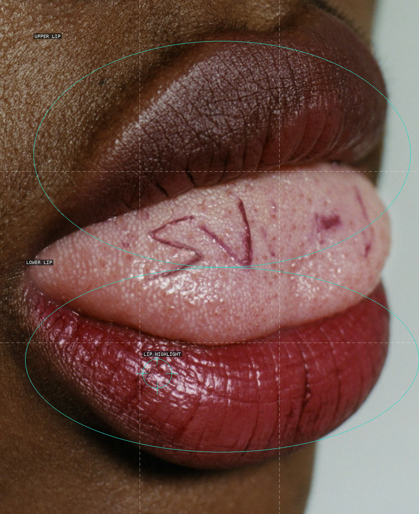
03-double-magazine-ss-2016
Two enlarged lips turn skin texture and the narrow mouth seam into the entire field.
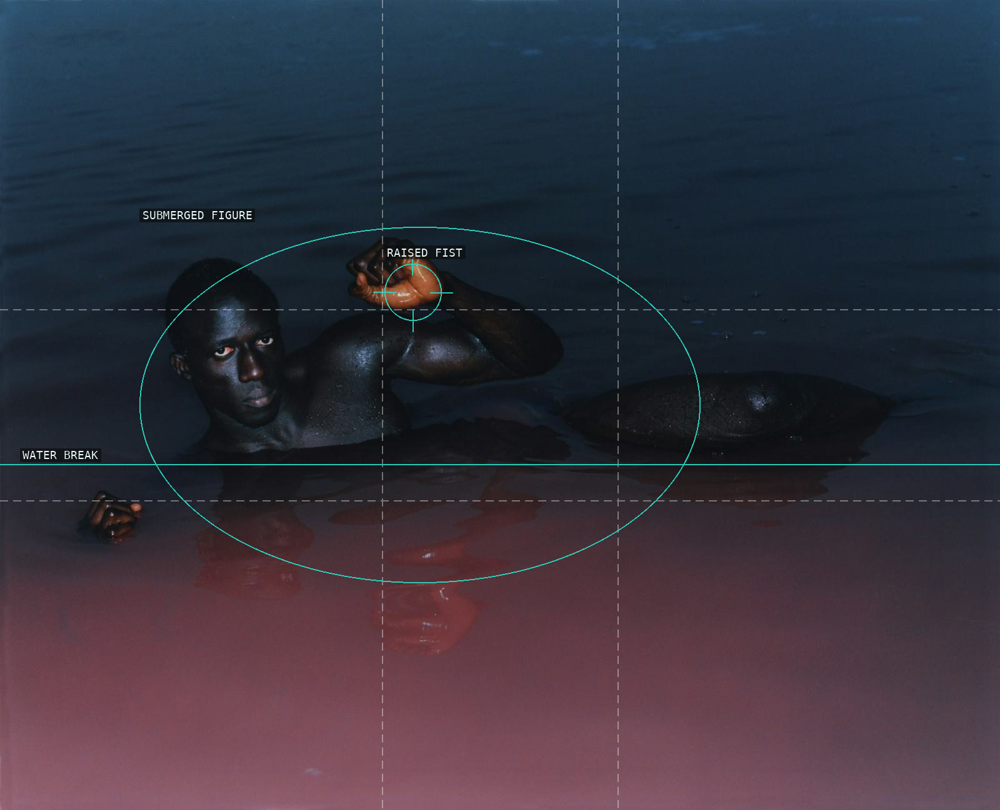
04-i-d-magazine-fall-2015
A face and raised fist surface inside a wide, dark water field.
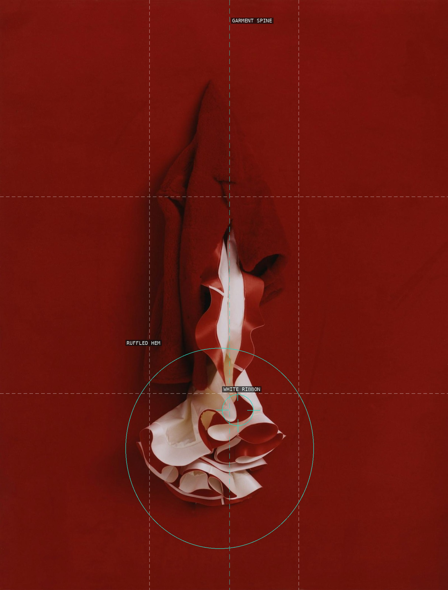
05-pop-magazine-fw-2014
The centered garment emerges as a near-abstract stack of red and white folds.
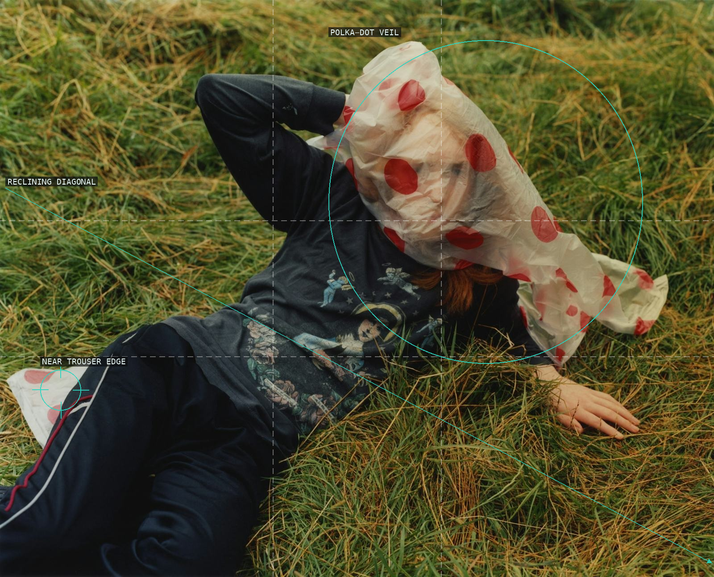
06-unpublished-june-2016
A reclining body crosses the grass while a translucent, spotted veil withholds the face.
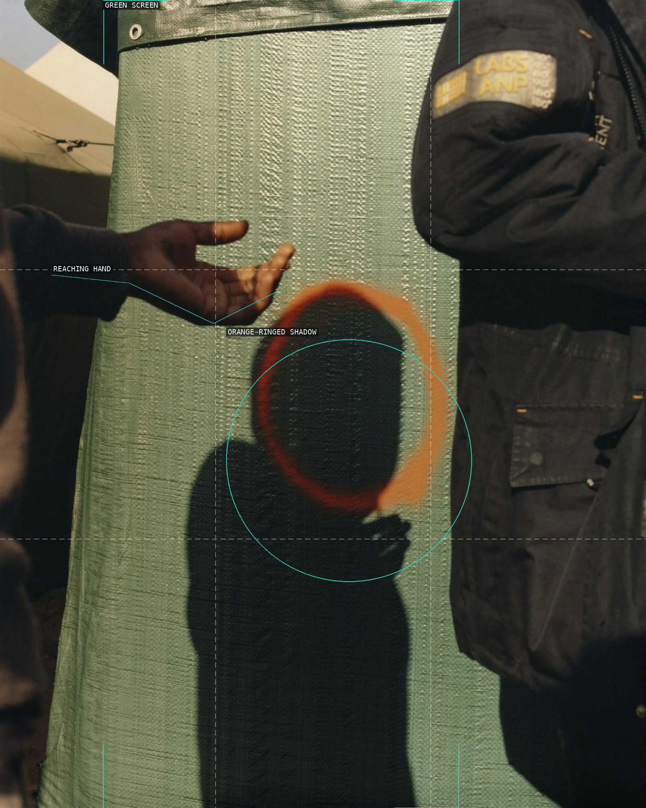
07-homes-november-2016
A hand, shadow, and ring of paint create a crowded exchange across a textured vertical screen.
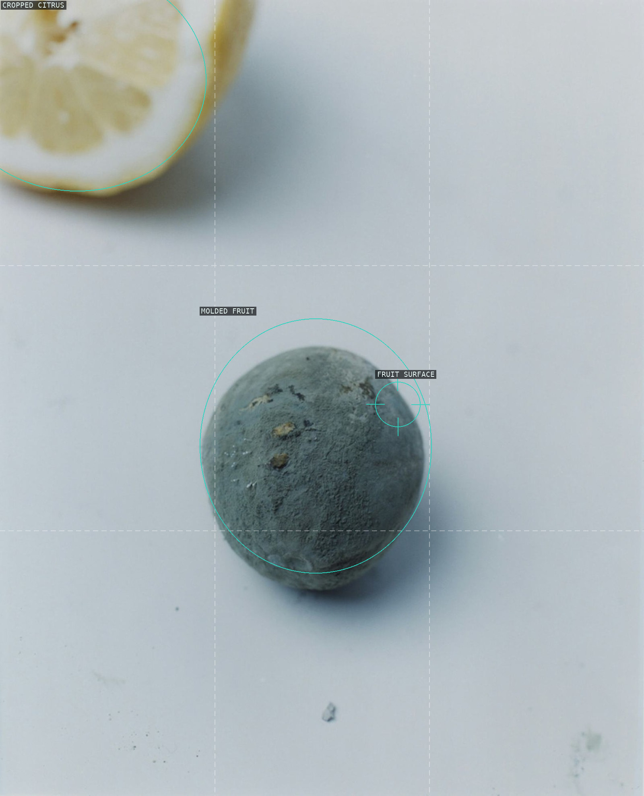
08-dazed-confused-fall-2015
Two imperfect fruits and their shadows use emptiness as a spacious, tactile stage.
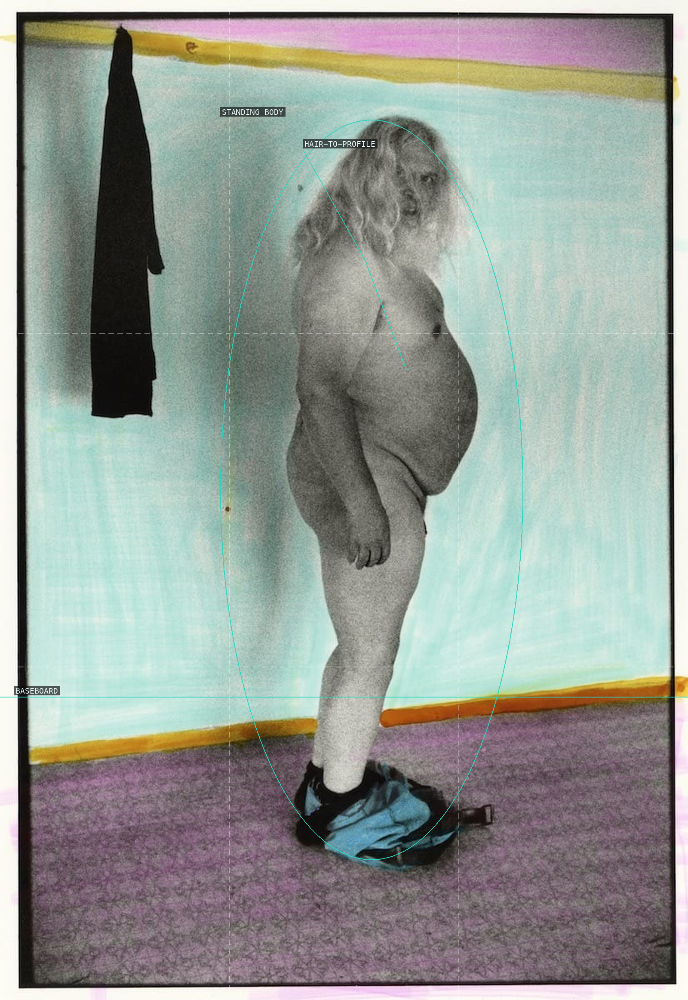
09-father-02
A profile body, hanging garment, and tinted room make a private room feel staged but unstable.
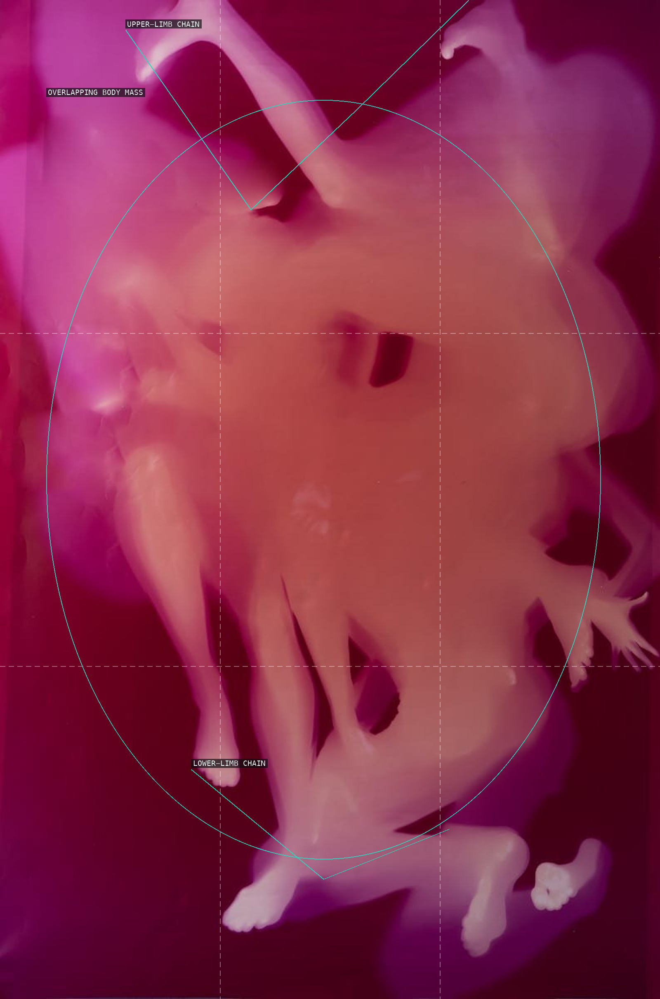
10-father-04
Blurred, overlapping limbs make one magenta field difficult to parse into separate bodies.
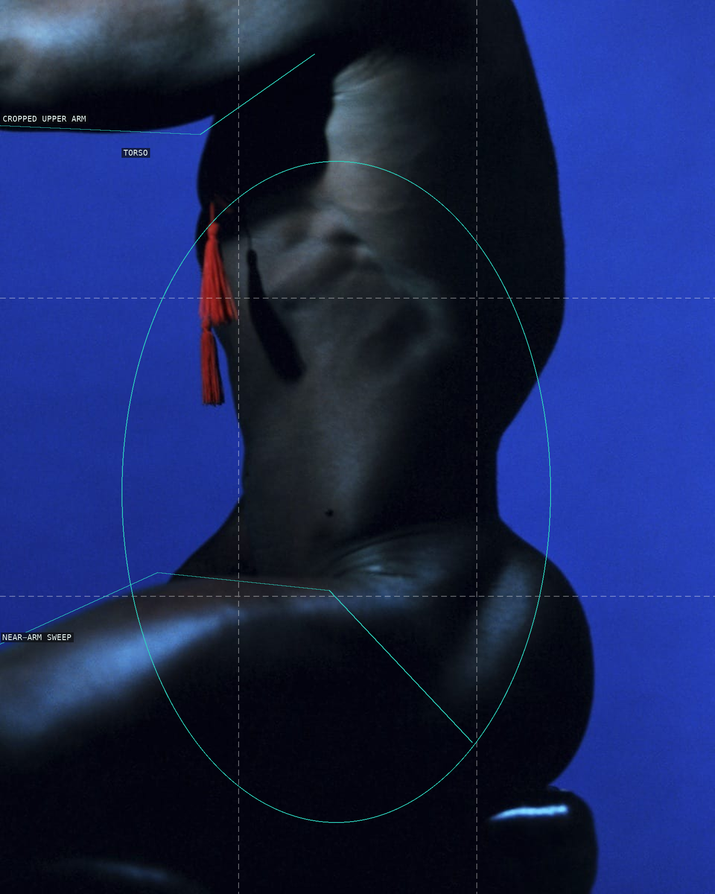
11-father-06
A cropped torso and two arm sweeps make blue ground press tightly against skin and tassel.
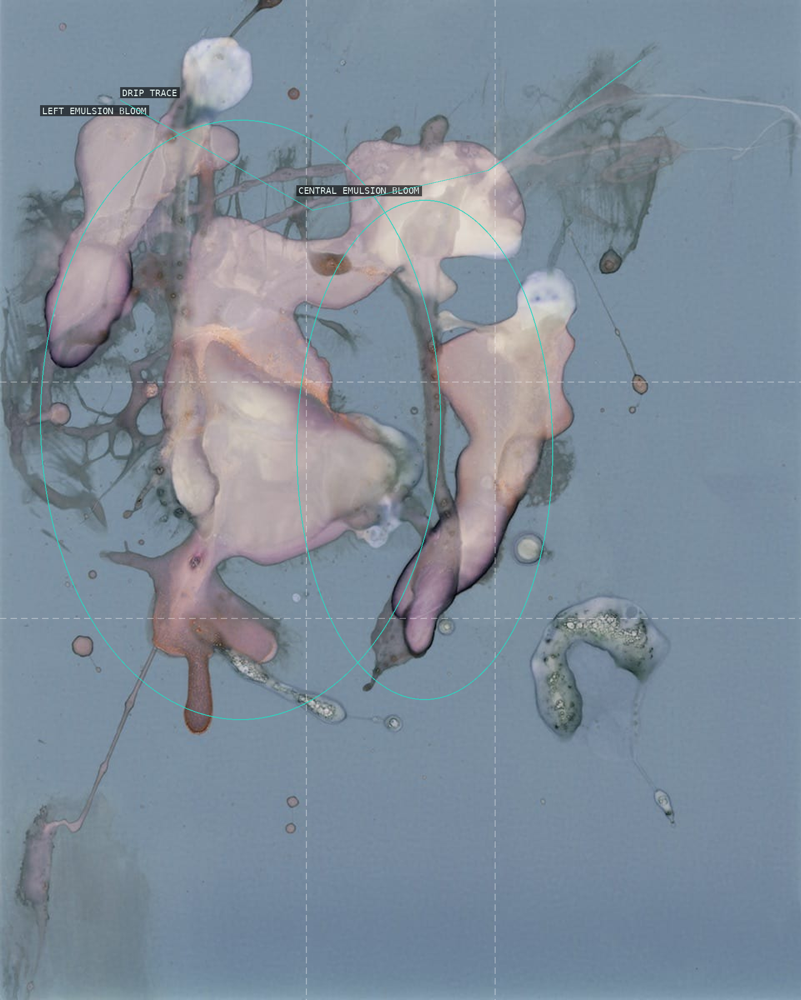
12-father-07
Pale emulsion blooms and fine drips turn the blue field into an unstable, bodily-looking surface.